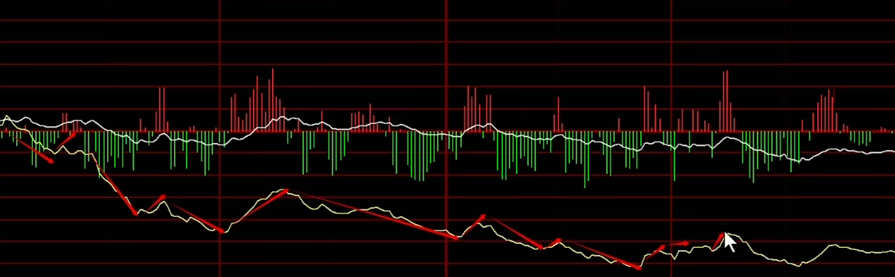
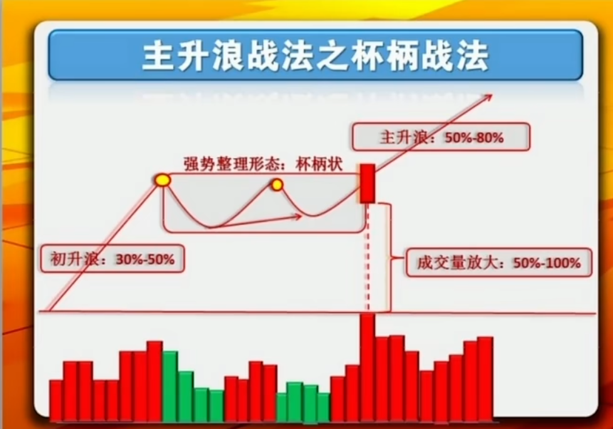
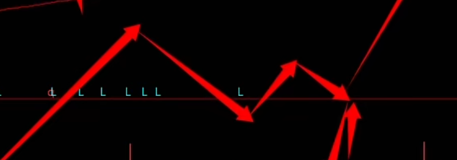

# 2024.6
# 初始
-
年线与半年线、箱体的上下沿都是重要支撑
-
护盘

如图，现在的护盘都是这种尖尖，被称为抵抗式下跌。
汪汪队不想跌下去的原因就是下面不好找支撑。
每一波尖尖都是瞬间的批量买盘，放量往上走，从盘口上看就是批量买入
然而上不去就是崩溃式下跌。
- 跌破支撑，上面就变成了压力位
- 高股息高位放量大跌，就是有资金跑路，小心见顶信号
# 筹码集中度判断
- 量价关系决定一切
# 底部
基础案例：
-
半年了，一直在箱体震荡，筹码集中
-
上涨放量，下跌缩量
-
一旦突破
后面就是一波往上走
此外一种情况：
- 与基础类似，且尽管是连续涨停板上来，但是当时没什么成交量，底部筹码基本出来了
时间久、成交量、整个区域盘整集合
或者一个时间短的案例：
- 前面下跌时没量，筹码散掉
- 上涨放量，下跌缩量，有新的筹码进去了，且锁仓了
- 短时间放大量，是之前的两三倍
# 顶部
-
短期连续三波上不去，破不了箱体的顶
-
放大量，尤其见顶下跌时，筹码散掉了
-
筹码处于相对高位
# 趋势判断应逃顶 or 抄底
上涨、下跌，盘整趋势，可以连接成完整趋势线
根据所在趋势进行操作
- 能够形成双头的标的，逻辑基本特别硬
- 下跌趋势后很少很少有直接 V 上来的，都需要盘整
- 顶部放量横盘，小心出货
- 逃顶和抄底，就是看趋势转换
# 2024.7
# 什么是黄线均价
- 均价是现价的支撑，也是压力，配合成交量来看
# 炒股祖训
- 不碰医药、半导体、券商涨停、军工、光伏
# 找卖点做 T
- 当跌破上升趋势线开始警觉，跌破均线就开始想出手，如果跌破后无法迅速回来，考虑短时间的跌幅，进行 T 或减仓
- 背离最常用
- 高开不涨停，必卖
# 2024.8
# 复盘
- 8.17 号的视频可以反复多看几遍
具体流程有：
- 指数 & 市场整体
指数走势、涨跌家数（市场好坏）、成交量（是否活跃）
- 大票（成交金额前两百）
主力资金在哪里，大票赚钱效应如何
- 涨幅前 200，跌幅前 200
超过 10cm 的 300 创业板什么情况，多少家涨停，多少家跌停
涨幅前 200 能到 6 个点、7 个点，那就是比较活跃
- 总市值从高到低
汪汪队来没来，权重股什么样
- 板块
每个版块涨跌幅，有多少涨跌停
- 30 天内新高
短期内比较强势
- 昨日涨停、昨日连板、昨日炸板（短线）
看看情绪如何，连板晋级率和大面情况，300 咋样
# 财报
市盈率第一重要
先看净利润增长率，年份 or 季度的环比
# 中线买点

- 杯柄形，买点在放量突破前高
# 2024.9
# 短庄
- 一般池子在 30 亿，日成交额在 5 亿
- 拉升前会拉高试盘
# 长庄
-
一般几十亿的资金，机构性，大资金，大盘子
-
周期长，洗盘可能洗半个月
-
大阳线一定放大量，回调一定缩量
-
少见的情况，若基本面比较硬，可能横盘调整，边拉边吸货，后续回调大阴线放量出货，到山顶已经出了七七八八了
# 2024.10
# 低位涨停战法
- 低位一两个涨停（放量最好）+ 横住（主力拿货）+ 主升浪
强庄主力，始终保持在建仓成本之上
- 机构常用技术手法
# 龙头二波
首先一波上涨（30%~50%），走出辨识度
- 强庄横盘，打到 10 天线，然后走二波
- 一般回踩，打到 20 天线，10~20% 的调整，然后二波
# 机构中期买点

关键支撑 & 买点：半年线
机构票的走法，只要基本面不变，一般会有一个二买。如果破掉，止损；没破，后面会很乐观
# 交易模式
# 2024.11
# 庄票
分时：不流畅、曲折
量价关系：不对等
走势：独立，上下影线很多
挂单：筹码空挡，大部分筹码都在庄家手里
空间：30%-40%
市值：50e 以下，30e 左右
日成交额：2-3e，最多 5e
# 底部平台战法
半年以上，底部横盘；一旦突破，主升大浪
# 情绪周期
-
坐高做低做切换
-
尽量只做龙一
# 短线
低位：做首板，做一进二（前一晚选定，认为题材能继续发酵）
-
大幅拉升、大单买入就要看；
-
3min 或 1min 涨速榜
-
可能上板就加自选，即将上板就去买
一进二很多都是底部涨停板战法，在底部有一个平台，涨停突破前高，吃后面的溢价
龙头：低吸半路打板都行，低吸只能用在龙头上，比如龙头首阴，反核
首板做概率，要分仓，比如 5 个票
标的的选择：越早涨停越好，十点半前涨停的最好，选择最有辨识度的。下午基本没好货，除非市场低开高走，可以做情绪的转折，选择最先走出来的标的
止损止盈：涨停没有溢价大部分情况直接出局。错了就割肉，一定要会割肉，不然不要做短线。
# 2024.12
# 龙头战法
- 龙头来源于换手
- 贴近生活的大题材 or 基本面巨大变化
- 该弱不弱就是强；该强不强就是弱
- 重势不重价
- 做短线不代表天天做，该空仓就空仓
- 一定要跟随市场，放弃主观看法
# 仓位控制
小资金，五万附近的，建议 55 分仓
大资金，10w、20w 的，建议分 5 成仓，22222，动态 8 成仓，最后留 2 成机动仓位
持股不要太多，两三个较好，最多四个，5 个极限
同板块买龙头，不要全买，最多买到龙二
趋势：短线最好 7:3 或者 8:2
一个股票最好不要超过半仓
破五天线减一部分，破十天线全清留底仓
开盘先处理手中的票，谨慎开仓
亏钱后减仓！！！
适合自己才是最好
# 2025.01
# 底部平台
天哥说这个最近比较流行
个人感觉炒冷饭，就是一红定江山
# 2025.03
# 净利润断层战法
上市公司发布的财报（如季报、半年报、年报）中，净利润显著超出市场预期
导致股价次日（或短期内）出现跳空高开，形成缺口且未被回补
同比 / 环比增加 50%
大景气行业
# 计算盈亏比
大题材，好指数，控制仓位
高位低位，做高赔率的
# 2025.04
# 盘口怎么看
emmm，没什么具体收获，听上去还是要多看看盘感